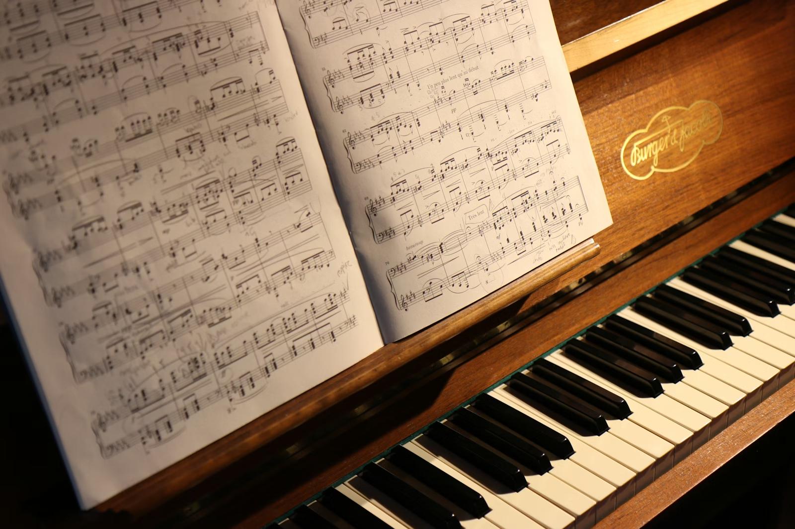
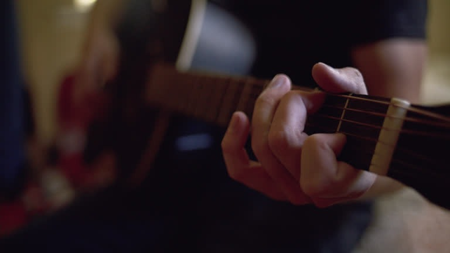
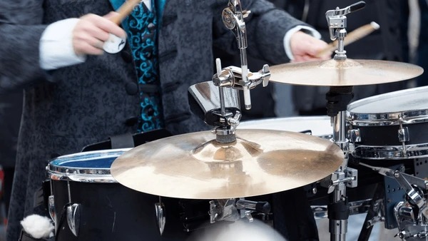
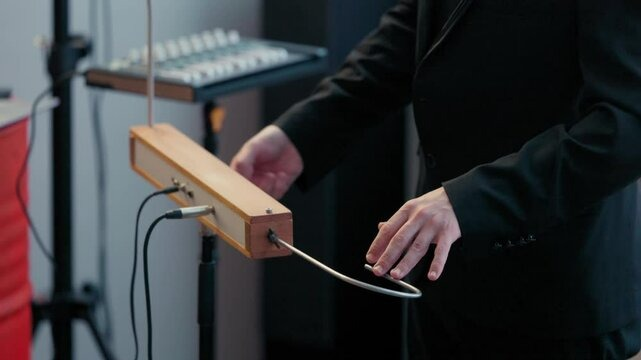

Explore diferentes categorias de instrumentos musicais, conheça suas características e descubra a diversidade presente em cada um deles.


Instrumentos que produzem som através de vibrações de cordas.
Instrumentos que produzem som através da vibração do ar.

Instrumentos que produzem som através do impacto.

Instrumentos eletrônicos, aerofones e mais.